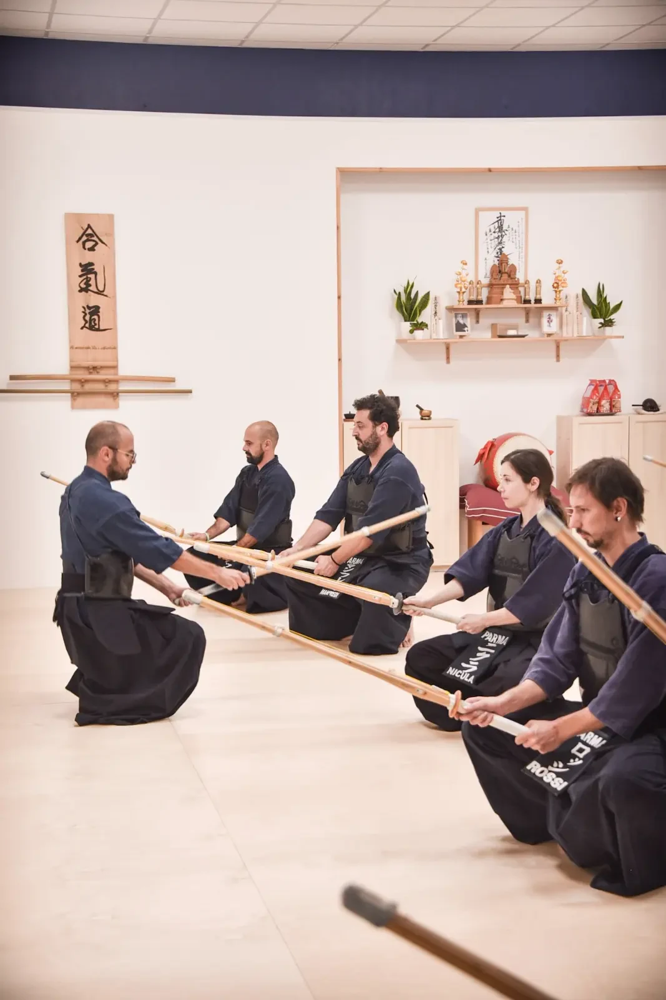
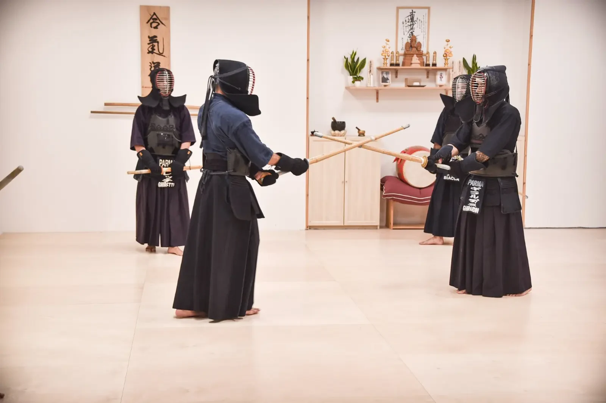
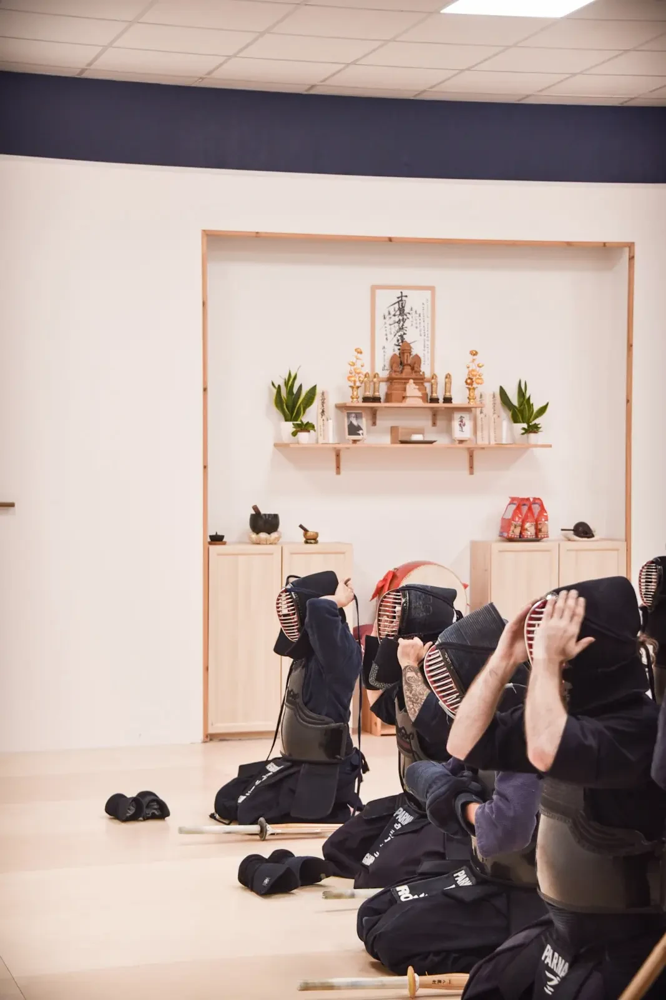
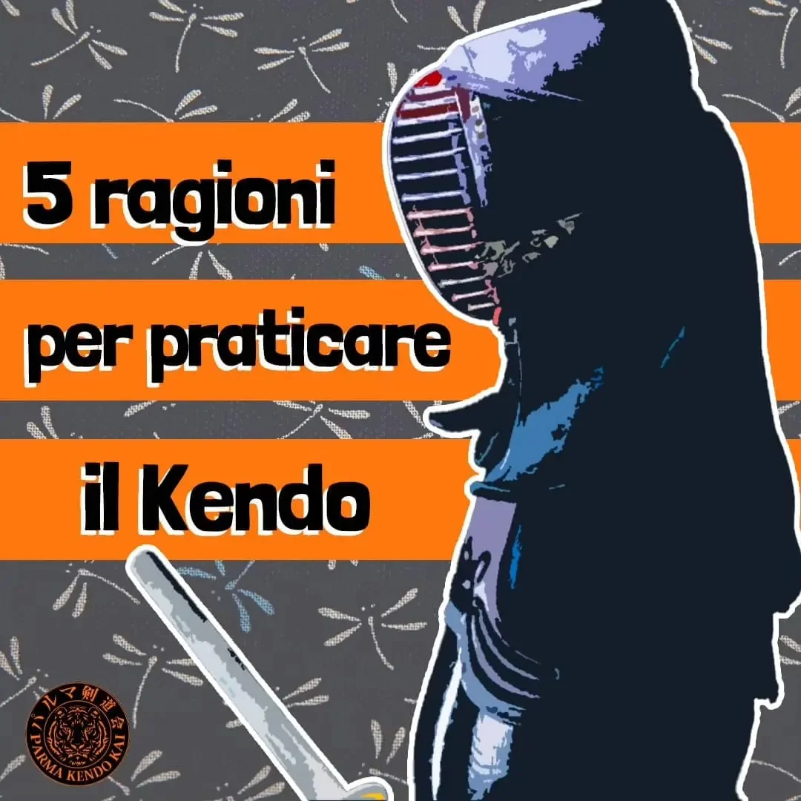
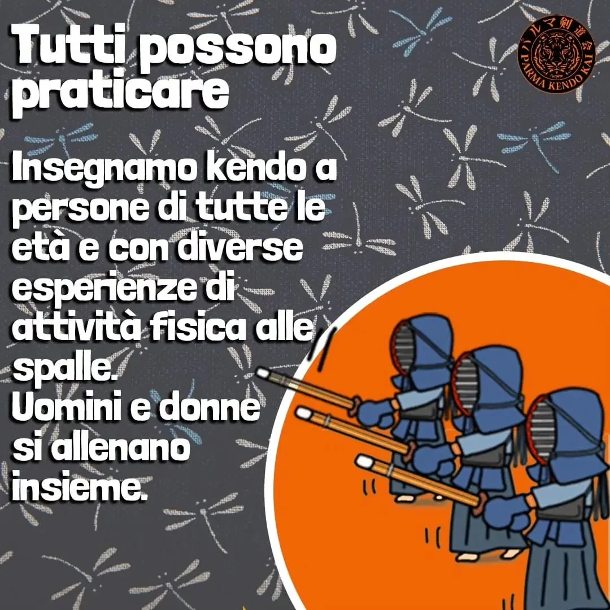
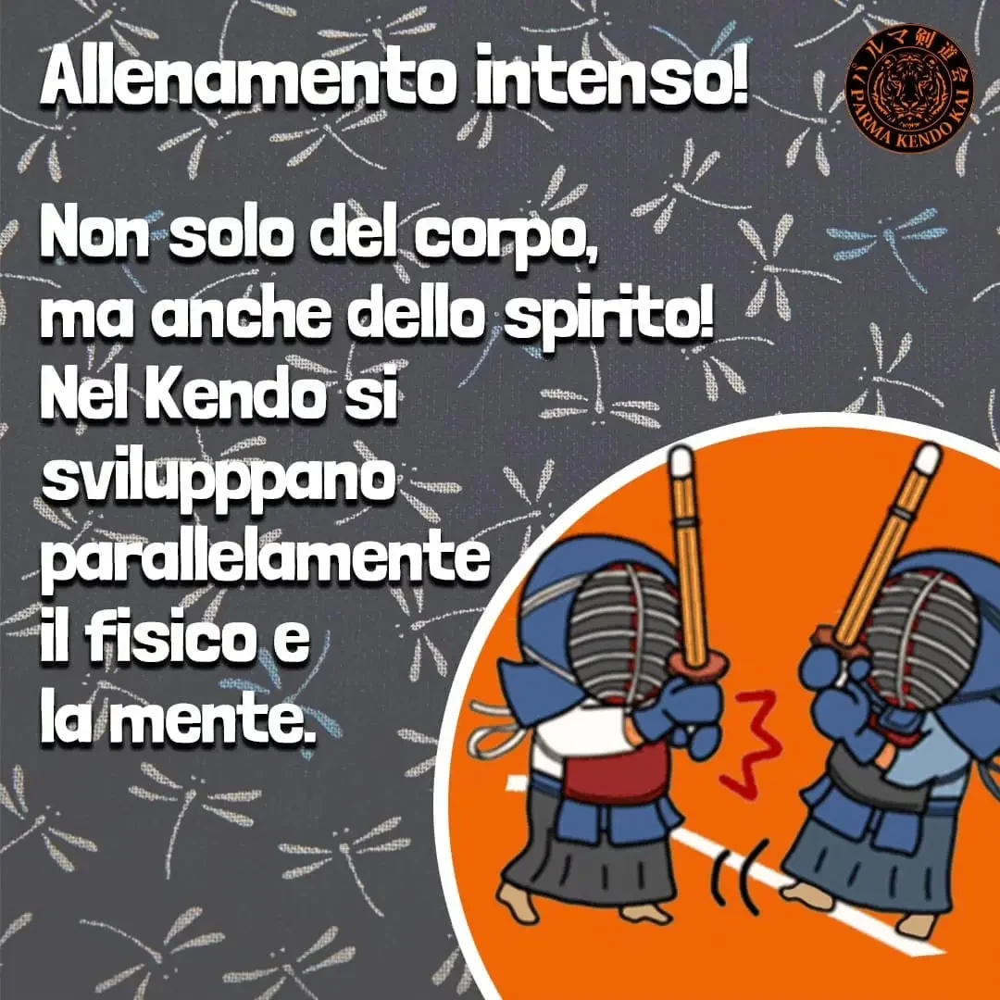
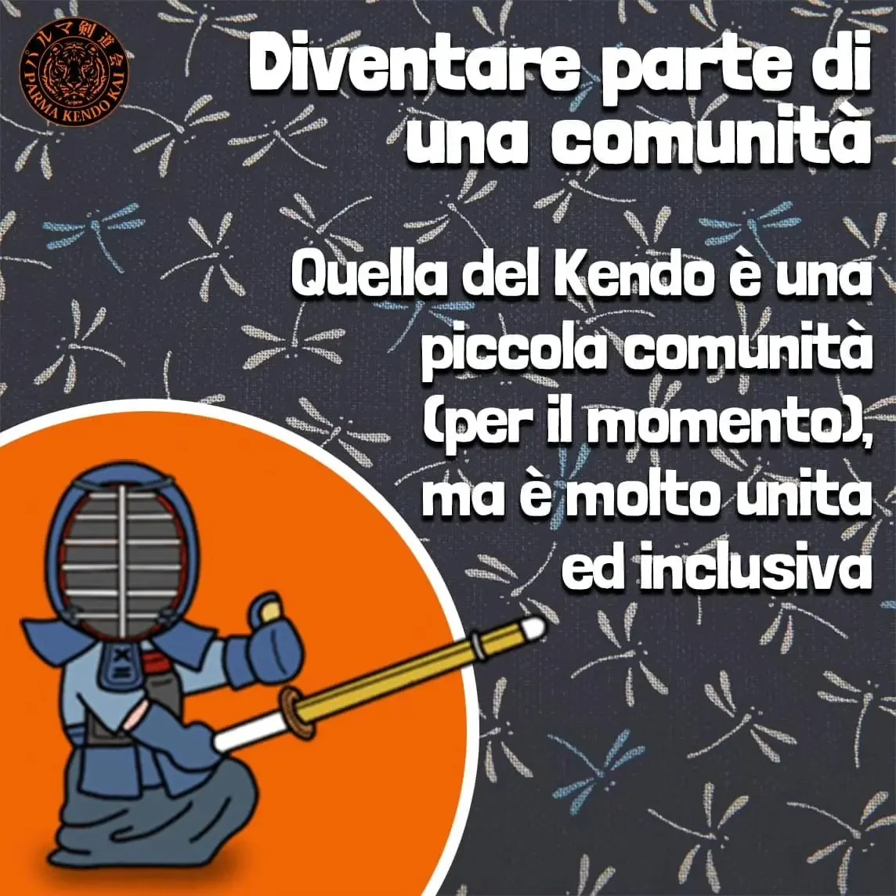
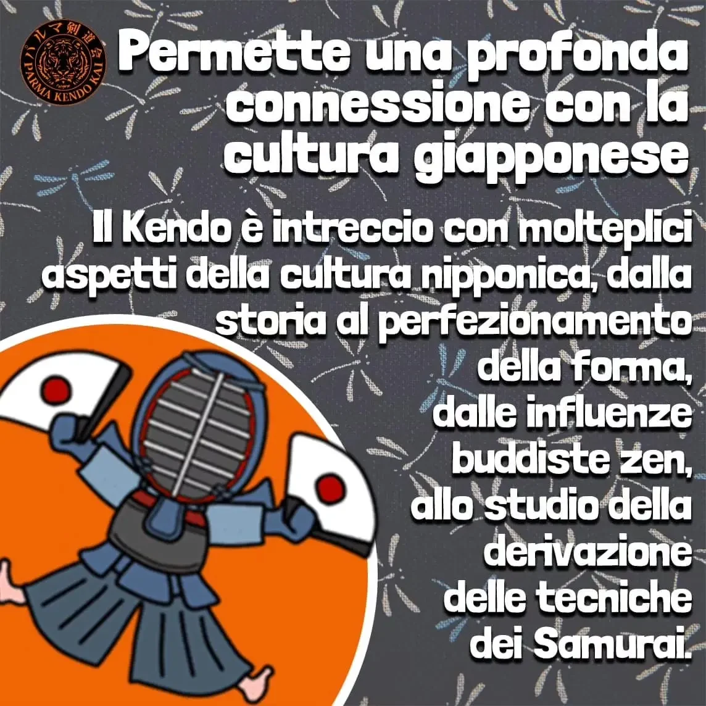
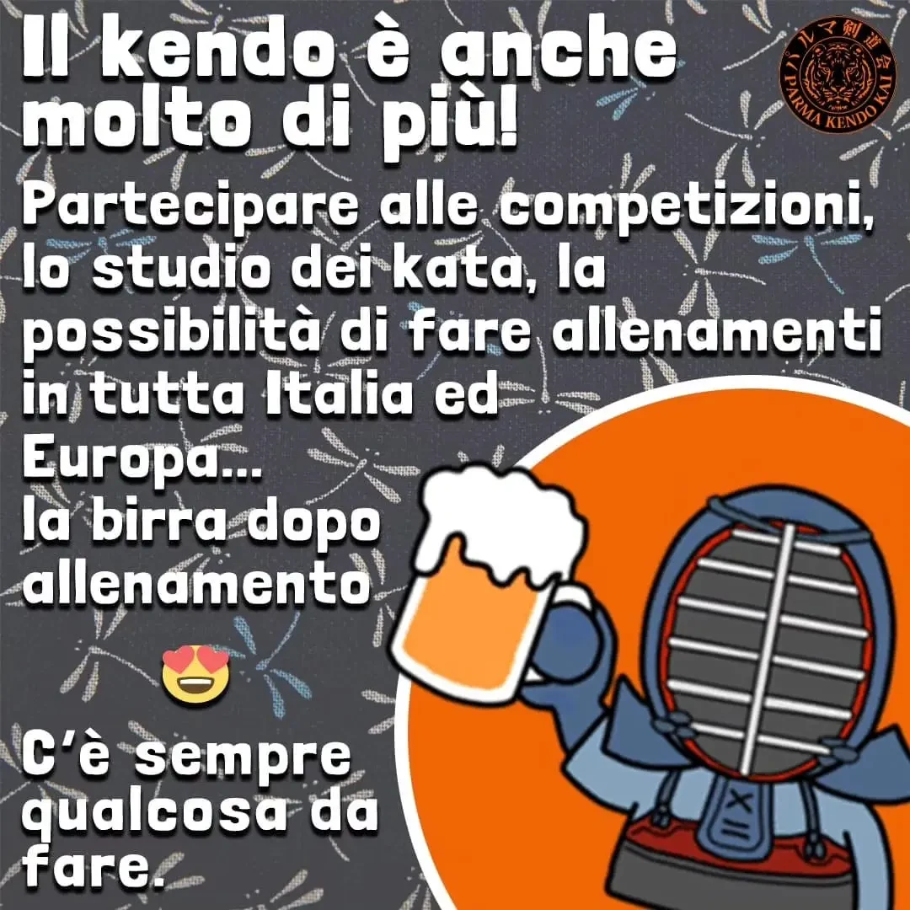

Chi siamo
L'associazione: la Parma Kendo Kai è una realtà nata nel 2012 volta a promuovere la pratica del Kendo nella nostra città. I suoi componenti frequentano con assiduità seminari con maestri Giapponesi e Koreani, inoltre partecipano a numerose competizioni sul territorio nazionale.

Il Kendo: è un'arte marziale Giapponese. Derivazione diretta delle tecniche di utilizzo della katana dai samurai nel periodo feudale, si traduce letteralmente con "la via della spada". Oggi si utilizza una spada di bambù (shinai) in luogo della katana e si indossa un'armatura protettiva (bogu) sulla quale si può colpire in punti prestabiliti.

La disciplina del Kendo si vive nel rapporto con gli altri, nella costante tensione al miglioramento di se stessi e della propria tecnica, attraverso il confronto con i compagni di pratica e gli avversari dentro e fuori dal dojo.

Si può quindi affermare che la pratica non si limita ad allenare il fisico, ma lavora anche sulla persona e sullo sviluppo di una corretta attitudine nell'affrontare la vita di tutti i giorni.

Perché iniziare alla Parma Kendo Kai?
Siamo un gruppo amichevole ed eterogeneo sia per interessi che per età. Contiamo più di una ventina di praticanti attivi e diverse cinture nere con più di 20 anni di esperienza di Kendo in giro per l'Italia, l'Europa e il Giappone.






Gli insegnanti
Istruttore C.I.K.–UISP–CSEN
Allenatore
Allenatore
Allenatore
Allenatore
La società sportiva dilettantistica è associata alla C.I.K. Confederazione Italiana Kendo e all'ente di promozione sportiva CSEN.
44.801485, 10.327904 — Parma